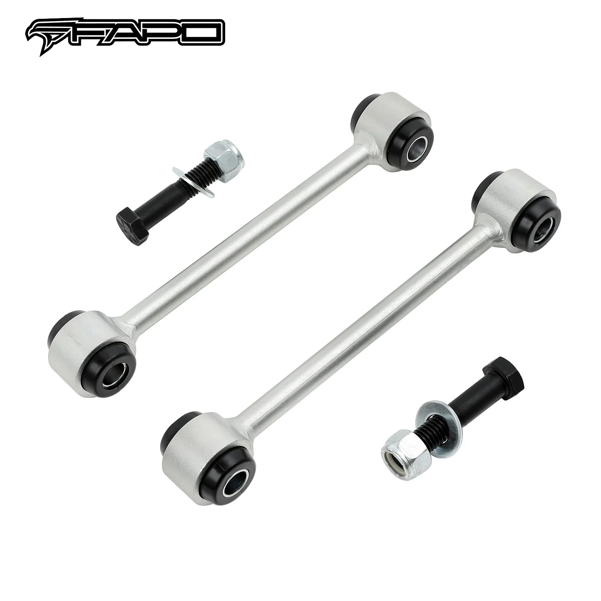

1 / 9FAPO Front 0-3.5" Lift Sway Bar Links Fits Jeep Gladiator JT 2020-2024
Charakterystyka przedmiotu: Stan: nowy Marka: FAPO Gwarancja producenta: 1 rok Numer części producenta: PZ270610 Umieszczenie na pojeździe: przód, lewo, prawo, góra, dół Typ: Łącznik stabilizatora Wysokość podnoszenia: 0-3,5 cala (przód) Długość oczka: 7,99" Pełna długość: 9,45 cala Górne mocowanie: 1/2-13 Dolne mocowanie: 1/2-13 Typ końcówki stabilizatora: Oczko Średnica pręta: 0,51" Część wydajnościowa: tak Regulo…
Item Specifics: Condition: New Brand: FAPO Manufacturer Warranty: 1 Year Manufacturer Part Number: PZ270610 Placement on Vehicle: Front, Left, Right, Upper, Lower Type: Sway Bar Link Lift Height: 0-3.5"(Front) Eyelet Length: 7.99" Full Length: 9.45" Upper Mounting: 1/2-13 Lower Mounting: 1/2-13 Sway Bar End Type: Eyelet Rod Diameter: 0.51" Performance Part: Yes Adjustable: No Modified Item: Yes Fitment Type: Performance/Custom Mounting Style: Bolt-On Material: Alloy Steel Universal Fitment: No Custom Bundle: Yes Items Included: Mounting Hardware, Bolts, Nut UPC: Does not apply Interchange Part Number: Modified Custom 1" 2" 2.5" 3" 3.25" 3.5" Inches Lifted OE/OEM Part Number: Off-Road Suspension Sway Bars Stabilizer End Links Lift Kits Superseded Part Number: Front Pair Driver Passenger Side Features: 100% Accuracy of Fit Easy to Replace No Drilling Required Sealed Warning: Warning: This product contains a chemical known to the State of California to cause cancer, birth defects, or other reproductive harm.
199 PLN
Opis produktu
Charakterystyka przedmiotu:
- Stan: nowy
- Marka: FAPO
- Gwarancja producenta: 1 rok
- Numer części producenta: PZ270610
- Umieszczenie na pojeździe: przód, lewo, prawo, góra, dół
- Typ: Łącznik stabilizatora
- Wysokość podnoszenia: 0-3,5 cala (przód)
- Długość oczka: 7,99"
- Pełna długość: 9,45 cala
- Górne mocowanie: 1/2-13
- Dolne mocowanie: 1/2-13
- Typ końcówki stabilizatora: Oczko
- Średnica pręta: 0,51"
- Część wydajnościowa: tak
- Regulowany: Nie
- Zmodyfikowany element: Tak
- Typ dopasowania: Wydajność/Niestandardowe
- Sposób montażu: przykręcany
- Materiał: stal stopowa
- Uniwersalne dopasowanie: Nie
- Pakiet niestandardowy: Tak
- Elementy zawarte: elementy montażowe, śruby, nakrętki
- UPC: Nie dotyczy
- Numer części Interchange: Zmodyfikowany niestandardowy 1" 2" 2,5" 3" 3,25" 3,5" cala podniesione
- Numer części OE/OEM: Stabilizatory zawieszenia terenowego Łączniki końcowe stabilizatora Zestawy podnośników
- Zastąpiony numer części: para przednia, strona kierowcy, pasażera
Cechy produktu:
- 100% dokładność dopasowania
- Łatwa wymiana
- Nie wymaga wiercenia
- Zapieczętowany
Ostrzeżenie:
- Ostrzeżenie: Ten produkt zawiera substancję chemiczną, o której w stanie Kalifornia wiadomo, że powoduje raka, wady wrodzone lub inne zaburzenia reprodukcji.
Item Specifics:
- Condition: New
- Brand: FAPO
- Manufacturer Warranty: 1 Year
- Manufacturer Part Number: PZ270610
- Placement on Vehicle: Front, Left, Right, Upper, Lower
- Type: Sway Bar Link
- Lift Height: 0-3.5"(Front)
- Eyelet Length: 7.99"
- Full Length: 9.45"
- Upper Mounting: 1/2-13
- Lower Mounting: 1/2-13
- Sway Bar End Type: Eyelet
- Rod Diameter: 0.51"
- Performance Part: Yes
- Adjustable: No
- Modified Item: Yes
- Fitment Type: Performance/Custom
- Mounting Style: Bolt-On
- Material: Alloy Steel
- Universal Fitment: No
- Custom Bundle: Yes
- Items Included: Mounting Hardware, Bolts, Nut
- UPC: Does not apply
- Interchange Part Number: Modified Custom 1" 2" 2.5" 3" 3.25" 3.5" Inches Lifted
- OE/OEM Part Number: Off-Road Suspension Sway Bars Stabilizer End Links Lift Kits
- Superseded Part Number: Front Pair Driver Passenger Side
Features:
- 100% Accuracy of Fit
- Easy to Replace
- No Drilling Required
- Sealed
Warning:
- Warning: This product contains a chemical known to the State of California to cause cancer, birth defects, or other reproductive harm.
FAPO Polska
Ten produkt obsługujemy lokalnie
Autoryzowana obsługa
FAPO Polska prowadzi katalog, kontakt i zamówienia bez odsyłania klienta do zewnętrznych sklepów.
Dobór po aucie
Sprawdzamy dopasowanie produktu do pojazdu, rocznika i wersji przed finalizacją zamówienia.
Wsparcie po zakupie
Masz kontakt w Polsce w sprawach zamówień, wysyłki, gwarancji i zwrotów.